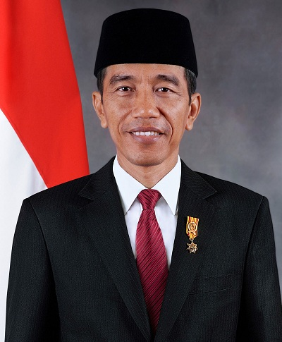

Joko Widodo
The seventh president of Indonesia

Joko Widodo
(click the image for Joko Widodo short story video)
(click the image for Joko Widodo short story video)
Joko Widodo, also known as Jokowi, is an Indonesian politician and businessman who is the 7th and current president of Indonesia.
Joko Widodo Political Career:
- Mayor of Surakarta (2005-2012)
- Governor of Jakarta (2012-2014)
- Presidency of Indonesia (2014-Now/2021)
Joko Widodo, also known as Jokowi, is an Indonesian politician and businessman who is the 7th and current president of Indonesia.
Joko Widodo Political Career: